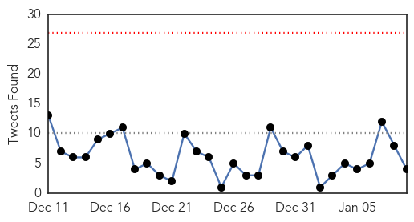

Influenza
30-Day Web Trend
1 alerts, 0 warnings

30-Day Twitter Trend
0 alerts, 0 warnings

Article Locations

Article Confidences

Top Articles:
- 0.999
- Mississippi flu
- 0.997
- 7 flu deaths reported in ND; F-M hospitals ask people with flu-like symptoms to delay patient visits
- 0.995
- First flu death expected to prompt even more doctor visits
- 0.994
- Report Confirms: Fourth Child in Minnesota Dies with Flu
- 0.848
- Digging Deeper: UW Research team starts revolutionary study duri
- 0.677
- Avian flu discoveries unlikely to affect Alaska
Top Tweets:
- 0.892
- RT: Weekly threat report: the start of influenza season, cases of botulism in people who inject drugs and Ebola update http://t…
- 0.555
- AFD Blog `@CDCgov HAN: Update On Influenza Season & Antiviral Recommendations' flu http://t.co/i6269X3NeQ
Ebola
30-Day Web Trend
0 alerts, 0 warnings

30-Day Twitter Trend
0 alerts, 0 warnings

Article Locations

Article Confidences

Top Articles:
- 0.995
- Ebola drug trial starts in Liberia
- 0.960
- UPDATE 2-IMF to provide new funds to help three main Ebola-hit nationsHealthcare
- 0.951
- Florida teen kills brother troubled by family abuse
- 0.951
- U.S. To Hand 15 Bases Back To Host Countries In Western Europe
- 0.943
- IMF Prepares New Aid in Ebola's Wake
- 0.932
- IMF Prepares New Aid in Ebola Wake
- 0.867
- Pujehun District Chairman hails security forces for success against Ebola
- 0.617
- IMF says preparing $150 mln in aid to three main Ebola-hit nations
- 0.532
- Two-months old baby survives Ebola, mother responding to treatment
- 0.531
- No confirmation on use of Ebola survivor William Pooley’s blood plasma to treat Pauline Cafferkey
Top Tweets:
- 0.877
- RT: EbolaResponse: Here's latest map of Ebola outbreak in WestAfrica with stats for Liberia, Guinea & Sierra Leone http://t.co/Yaa…
- 0.829
- Ebola : Despite 250 new cases in a week Sierra Leone may be seeing slowdown, says WHO http://t.co/yOdY4opQZi
- 0.714
- CDC Scientists Heidi & Lindsey implemented an infection-control training course for Guinean health workers. http://t.co/NAouzpL5yS Ebola
- 0.620
- RT: Pr aider les pays affectés par Ebola à se relever, il est essentiel de réorganiser les systèmes de santépublique : http://t.c…
- 0.596
- RT: Médecins Sans Frontières (MSF) launches a new Ebola Treatment Center in Kissy, an Ebola hotspot on the outskirts of Freetow…
- 0.595
- Two leading Ebola vaccines appear safe, further tests starting http://t.co/5C0fsizeci TackleEbola
- 0.571
- U.S. lab worker possibly exposed to Ebola showing no symptoms: CDC - Yahoo News http://t.co/UL75QHGQH1